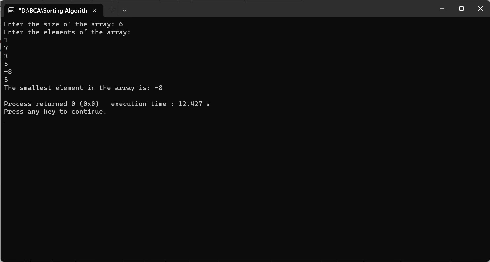

FIND THE SMALLEST ELEMENT IN THE INTEGER ARRAY USING RECURSION
#include
int findSmallestElement(int arr[], int size) {
if (size == 1) {
return arr[0];
}
int smallestInRest = findSmallestElement(arr, size - 1);
return (arr[size - 1] < smallestInRest) ? arr[size - 1] : smallestInRest;
}
int main() {
int size;
printf("Enter the size of the array: ");
scanf("%d", &size);
if (size <= 0) {
printf("Array size should be a positive integer.\n");
return 1;
}
int array[size];
printf("Enter the elements of the array:\n");
for (int i = 0; i < size; i++) {
scanf("%d", &array[i]);
}
int smallest = findSmallestElement(array, size);
printf("The smallest element in the array is: %d\n", smallest);
return 0;
}
